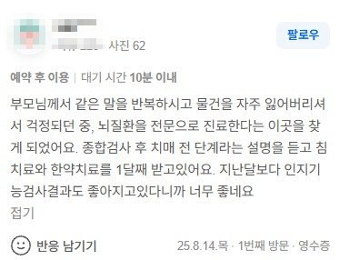
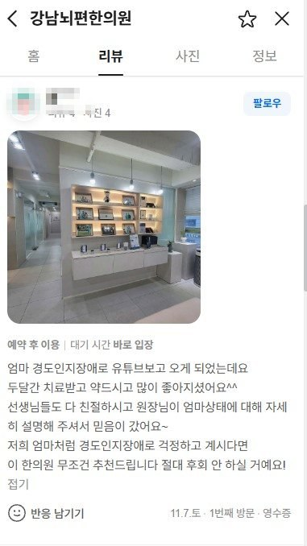

이런 증상이 있나요? | 1분 체크
- 같은 질문을 반복하고 최근 일을 자주 잊습니다.
- 돈 관리·약 복용·익숙한 길 찾기가 어려워집니다.
- 성격·행동·판단력에 변화가 생깁니다.
- 가족이 일상 기능의 저하를 관찰합니다.
위 체크리스트는 자가진단이 아니라 진료 상담을 돕기 위한 참고 문항입니다.
어떤 질환인가요? 주요 증상
치매는 기억·언어·판단 등 인지기능 저하가 일상생활의 독립성에 영향을 주는 상태입니다. 원인 질환은 알츠하이머병, 혈관성 치매 등 다양합니다. 건망증과 경도인지장애를 곧바로 치매와 동일시해서는 안 됩니다.
원인과 악화 요인
고혈압·당뇨·흡연·신체활동 부족, 청력저하 등 여러 수정 가능한 위험요인을 관리하면 인지기능 저하 위험을 낮추는 데 도움이 될 수 있습니다. 어떤 방법도 모든 치매를 확실히 예방한다고 보장할 수는 없습니다.
검사와 감별이 필요한 경우
점진적인 기억·판단력 저하나 기능 변화가 있다면 신경과·정신건강의학과에서 인지검사, 원인 검사, 진단에 따른 약물치료 가능성을 평가해야 합니다.

강남뇌편한의원의 진료 및 치료 방향
한의학+미국 정골의학+통합의학3가지 관점으로 만성 뇌신경질환·자율신경질환을 진료합니다
수면·신체활동·복용약과 동반 불편에 대한 보완적 진료 가능성을 안내합니다. 진단된 치매의 표준치료와 돌봄 계획이 중심이며 침·한약이 치매를 완치하거나 진행을 막는다고 표현하지 않습니다.

생활관리와 경과 확인
운동·사회활동·인지활동·혈관 위험 관리, 청력 및 시력 점검을 꾸준히 실천하세요. 가족은 약물 복용과 안전, 일상 기능의 변화를 기록하고 돌봄 지원체계를 함께 준비하는 것이 좋습니다.
경도인지장애 치료 후기


환자분이 직접 작성하신 후기이며, 치료 결과와 경과는 개인마다 다를 수 있어 모든 분께 같은 효과를 보장하지 않습니다.
자주 묻는 질문 | Q&A
치매를 예방하는 약이나 한약이 있나요?
모든 치매를 확실히 예방한다고 입증된 약이나 한약은 없습니다. 위험요인 관리와 적절한 의학적 평가가 중요합니다.
초기 치매도 치료를 받아야 하나요?
네. 원인에 따른 약물·비약물 치료와 안전·생활 지원을 통해 증상과 일상 기능을 관리할 수 있습니다.
증상이 반복된다면 진료 상담으로 확인해 보세요
한의학 · 미국 정골의학 · 통합의학, 3가지 관점의 진료
증상 시작 시기, 반복되는 상황, 이전 검사 결과, 현재 복용약을 알려주시면 도움이 됩니다.